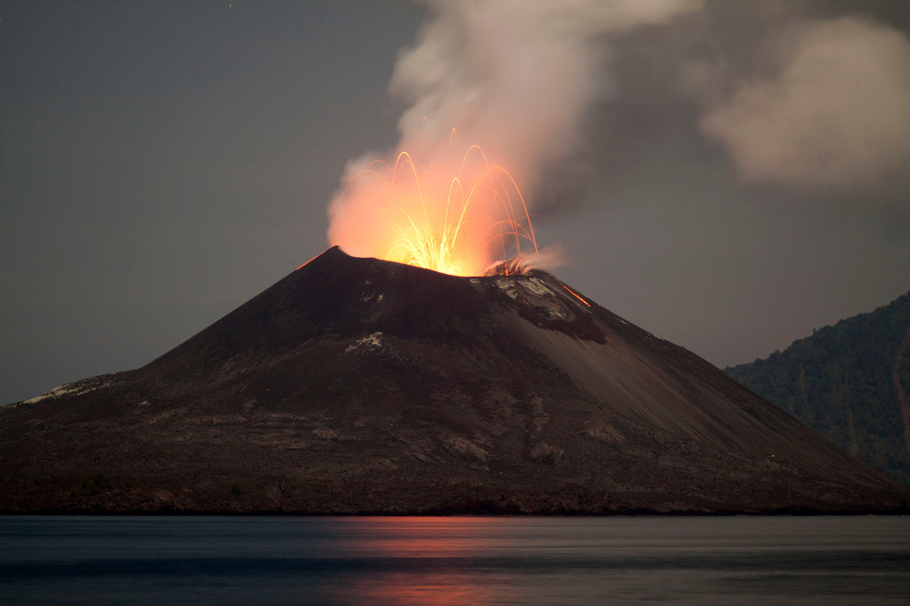

Krakatoa

Description
is a caldera in the Sunda Strait between the islands of Java and Sumatra in the Indonesian province of Lampung. The caldera is part of a volcanic island group (Krakatoa archipelago) comprising four islands. Two of them are known as Lang and Verlaten; another, Rakata, is the only remnant of an island mostly destroyed by an eruption in 1883 which created the caldera.
In 1927, a fourth island, Anak Krakatoa, or "Child of Krakatoa", emerged from the caldera formed in 1883. There has been new eruptive activity since the late 20th century, with a large collapse causing a deadly tsunami in December 2018.
History
The most notable eruptions of Krakatoa culminated in a series of massive explosions over 26–27 August 1883, which were among the most violent volcanic events in recorded history.
With an estimated Volcanic Explosivity Index (VEI) of 6, the eruption was equivalent to 200 megatons of TNT (840 PJ)—about 13,000 times the nuclear yield of the Little Boy bomb (13 to 16 kt) that devastated Hiroshima, Japan, during World War II, and four times the yield of Tsar Bomba, the most powerful nuclear device ever detonated at 50 Mt.